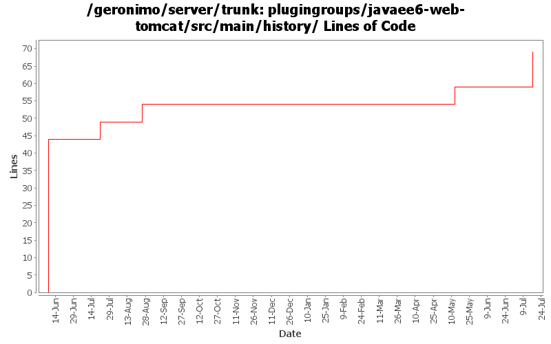

[root]/plugingroups/javaee6-web-tomcat/src/main/history

| Author | Changes | Lines of Code | Lines per Change |
|---|---|---|---|
| Totals | 5 (100.0%) | 69 (100.0%) | 13.8 |
| dwoods | 1 (20.0%) | 44 (63.8%) | 44.0 |
| rwonly | 1 (20.0%) | 10 (14.5%) | 10.0 |
| xiaming | 1 (20.0%) | 5 (7.2%) | 5.0 |
| linsun | 1 (20.0%) | 5 (7.2%) | 5.0 |
| gawor | 1 (20.0%) | 5 (7.2%) | 5.0 |
update dependencies.xml files
10 lines of code changed in 1 file:
GERONIMO-5738 user principal should be set to null when logout, fix provided by Shenghao Fang
5 lines of code changed in 1 file:
add javamail config to web profile assembly so that we can have MailResource created
5 lines of code changed in 1 file:
enable (non-working) openwebbeans plugin in build just to test dependencies, etc.
5 lines of code changed in 1 file:
create initial Java EE 6 Web Profile plugin groups. Note: this is a subset of the full javaee groups, which do not use these, as we need to figure out the ejb vs ejb-lite packaging. Also, since this includes EBA support, there may be slightly more included than required for Web Profile.
44 lines of code changed in 1 file: